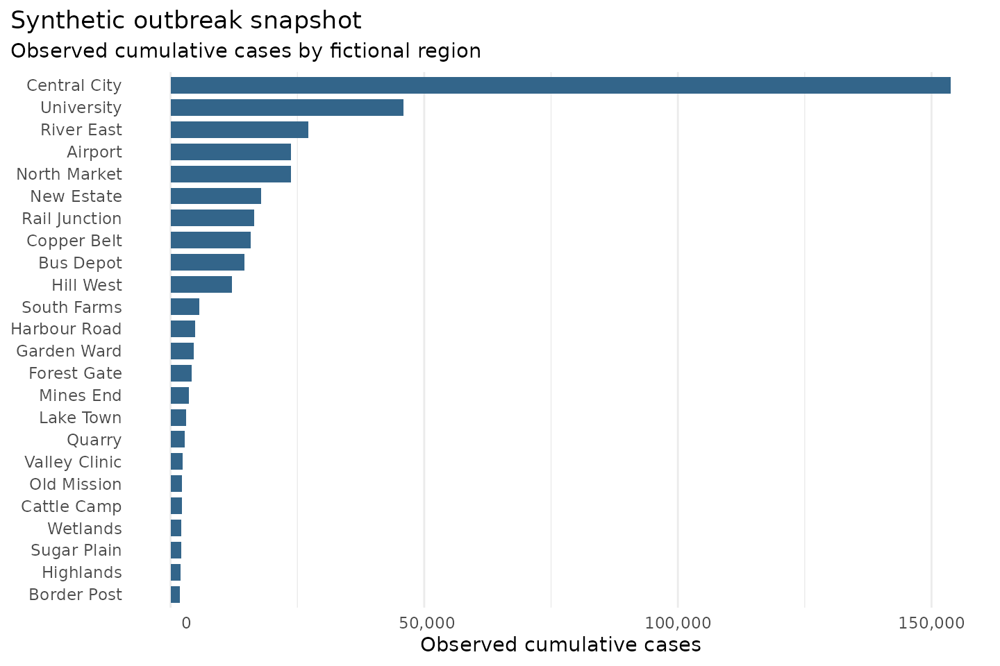
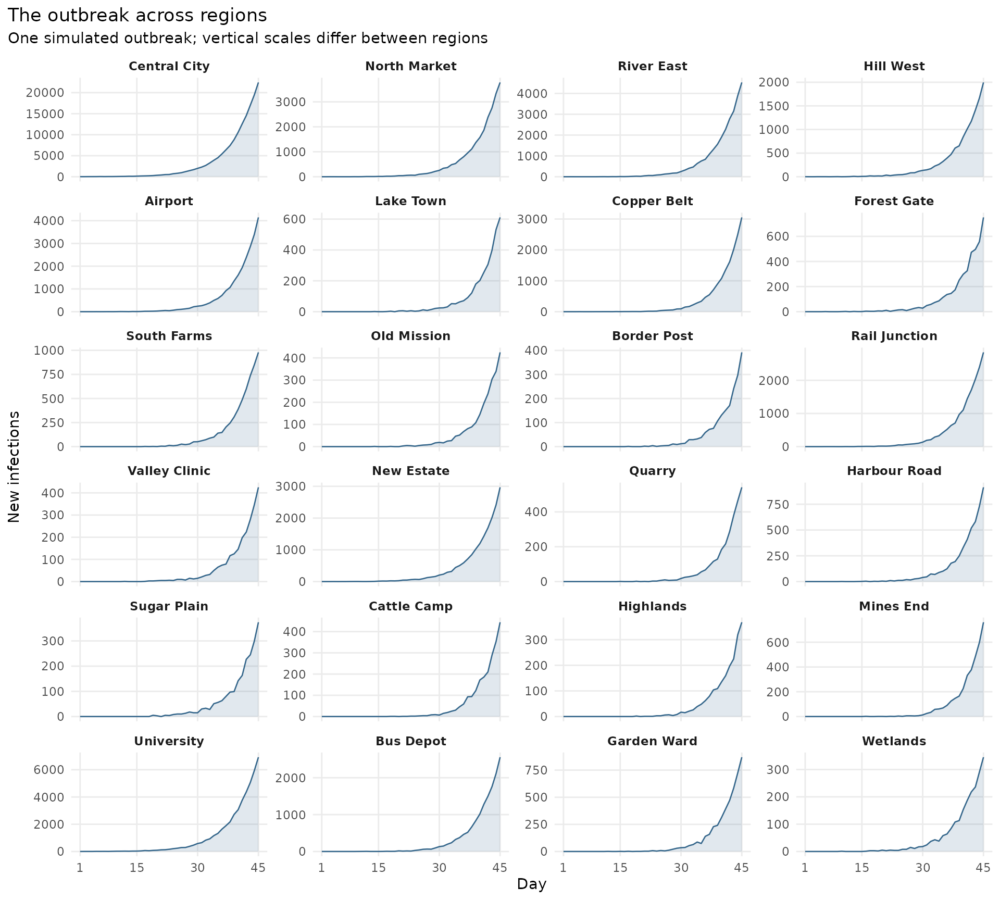
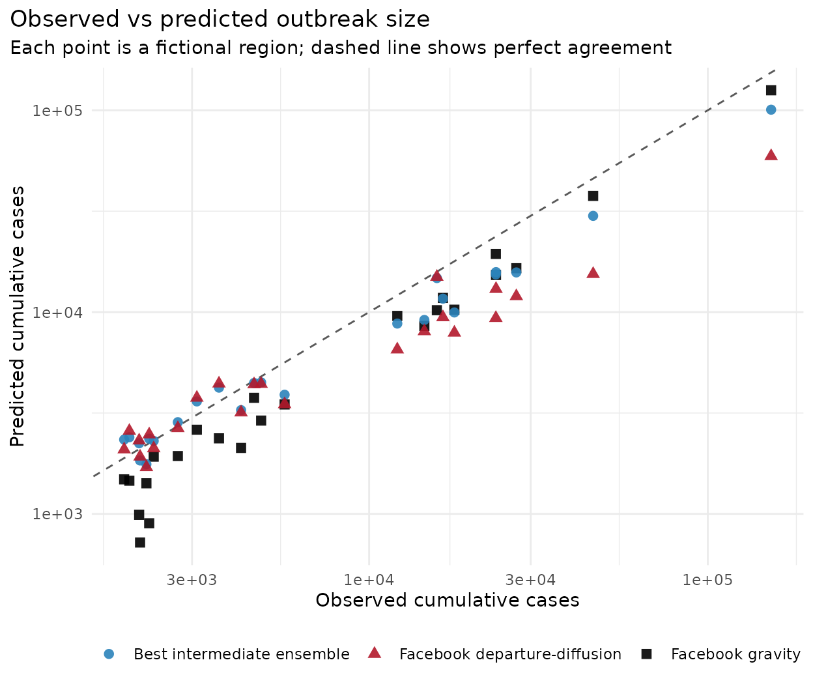

Identifying a mobility model for an outbreak
outbreak-model-selection.RmdMobility fit statistics are useful, but they are not the only reason to choose a model. In an outbreak analysis, the practical question is often whether a mobility assumption helps explain the observed spatial pattern of cases.
This vignette uses a controlled fictional example. We create a set of
regions, simulate a spatially coupled stochastic SIR outbreak using one
bundled nomad model as the data-generating mobility
assumption, and then ask which package model best explains the simulated
outbreak snapshot.
A Fictional Place
The example has 24 hypothetical regions. The locations and populations are invented, but the structure is deliberately similar to an admin-level analysis: named regions, a population vector, and a pairwise distance matrix.
Show code for this step
regions <- data.frame(
region = c(
"Central City", "North Market", "River East", "Hill West",
"Airport", "Lake Town", "Copper Belt", "Forest Gate",
"South Farms", "Old Mission", "Border Post", "Rail Junction",
"Valley Clinic", "New Estate", "Quarry", "Harbour Road",
"Sugar Plain", "Cattle Camp", "Highlands", "Mines End",
"University", "Bus Depot", "Garden Ward", "Wetlands"
),
x = c(
0, 0.8, 1.6, -1.1, 2.5, -2.0, 3.1, -2.6,
0.4, -1.8, 3.8, 1.9, -0.4, 0.9, 2.8, -3.1,
-0.9, 1.4, -2.4, 3.5, 0.2, 1.1, -1.3, -2.8
),
y = c(
0, 1.2, -0.4, 0.9, 0.7, 2.2, 2.1, -0.1,
-1.9, -2.4, -1.3, 1.8, 2.9, -0.9, -2.5, 1.1,
-3.2, -2.8, 3.2, 3.0, 0.4, -1.6, 1.9, -1.7
),
population = c(
1250000, 260000, 340000, 180000, 410000, 120000,
520000, 95000, 105000, 80000, 70000, 300000,
65000, 220000, 90000, 140000, 75000, 55000,
85000, 160000, 380000, 240000, 130000, 60000
)
)
D <- as.matrix(dist(regions[, c("x", "y")])) * 70
dimnames(D) <- list(regions$region, regions$region)
N <- setNames(regions$population, regions$region)
newdata <- list(D = D, N = N)
regions[1:8, ]#> region x y population
#> 1 Central City 0.0 0.0 1250000
#> 2 North Market 0.8 1.2 260000
#> 3 River East 1.6 -0.4 340000
#> 4 Hill West -1.1 0.9 180000
#> 5 Airport 2.5 0.7 410000
#> 6 Lake Town -2.0 2.2 120000
#> 7 Copper Belt 3.1 2.1 520000
#> 8 Forest Gate -2.6 -0.1 95000The bundled models were fitted to Zambia mobility data. Here they are used only as alternative mobility assumptions in a fictional software example. The point is the workflow: predict candidate mobility matrices, run the same transmission model under each matrix, and score the resulting spatial outbreak pattern.
Mobility Candidates From nomad
The candidate mobility matrices come from actual package models. We use normalised exponential gravity and exponential departure-diffusion from the same 21-day dataset; their stored diagnostics are more suitable for a worked example than alternatives with pronounced mixing problems. The Facebook gravity model is the known data-generating model for this controlled example. The Facebook departure-diffusion model is the alternative, and the ensemble weights create intermediate candidates.
Show code for this step
gravity_model <- model_db$zmb_fb_2025_mod_grav_exp_norm
diffusion_model <- model_db$zmb_fb_2025_mod_dd_exp
gravity_flows <- predict(gravity_model, newdata = newdata, unit = "km")
diffusion_flows <- predict(diffusion_model, newdata = newdata, unit = "km")
candidate_prediction <- function(weight_gravity) {
if (weight_gravity == 0) {
return(predict(diffusion_model, newdata = newdata, unit = "km"))
}
if (weight_gravity == 1) {
return(predict(gravity_model, newdata = newdata, unit = "km"))
}
ensemble <- nomad_ensemble(
list(diffusion = diffusion_model, gravity = gravity_model),
weights = c(diffusion = 1 - weight_gravity, gravity = weight_gravity)
)
predict(ensemble, newdata = newdata, unit = "km")
}A Spatially Coupled SIR Model
The SIR model below is intentionally compact, but it is a real stochastic compartmental model. Each day, susceptible individuals can become infected via local prevalence and prevalence imported through the mobility matrix. Infectious individuals recover with a daily probability derived from the mean infectious period.
Show code for this step
flow_to_coupling <- function(M) {
M <- pmax(as.matrix(M), 0)
diag(M) <- 0
row_total <- rowSums(M)
P <- M
P[row_total > 0, ] <- P[row_total > 0, , drop = FALSE] / row_total[row_total > 0]
P[row_total == 0, ] <- 1 / (ncol(M) - 1)
diag(P) <- 0
P
}
simulate_sir <- function(P,
N,
days = 45,
beta = 0.35,
gamma = 1 / 7,
epsilon = 0.28,
seed_region = "Central City",
seed_infections = 60,
keep_history = FALSE) {
S <- round(N)
I <- setNames(rep(0, length(N)), names(N))
R <- I
C <- I
I[seed_region] <- seed_infections
S[seed_region] <- S[seed_region] - seed_infections
C[seed_region] <- seed_infections
if (keep_history) {
history <- vector("list", days)
}
p_recover <- 1 - exp(-gamma)
for (day in seq_len(days)) {
prevalence <- I / N
imported <- as.numeric(P %*% prevalence)
names(imported) <- names(N)
lambda <- beta * ((1 - epsilon) * prevalence + epsilon * imported)
p_infection <- pmin(1 - exp(-lambda), 1)
new_infections <- stats::rbinom(length(N), pmax(round(S), 0), p_infection)
recoveries <- stats::rbinom(length(N), pmax(round(I), 0), p_recover)
S <- S - new_infections
I <- I + new_infections - recoveries
R <- R + recoveries
C <- C + new_infections
if (keep_history) {
history[[day]] <- data.frame(day = day, region = names(N),
new_infections = new_infections,
susceptible = S, infectious = I, recovered = R,
cumulative = C)
}
}
if (keep_history) return(do.call(rbind, history))
C
}
mean_sir <- function(P, N, nsim = 80, seed = 1, ...) {
set.seed(seed)
out <- matrix(0, nrow = length(N), ncol = nsim,
dimnames = list(names(N), NULL))
for (i in seq_len(nsim)) {
out[, i] <- simulate_sir(P, N, ...)
}
rowMeans(out)
}The force of infection in region i is:
lambda_i = beta * ((1 - epsilon) * I_i / N_i + epsilon * imported_i)
where imported_i is prevalence pressure from other
regions after applying the row-normalised mobility matrix. Each origin
experiences the average prevalence of its destinations, weighted by its
outgoing travel shares. This is a simplified mixing assumption, not a
simulation of travellers moving between compartments. The row
normalization discards absolute trip volumes; the daily step comes from
the SIR model, not from treating the 21-day mobility matrix as daily
trips.
S, I and R track susceptible,
infectious and recovered people. New infections move people from S to I,
and recoveries move them from I to R, preserving each region’s
population. C accumulates infections, including the initial
seed. beta, gamma and epsilon
remain fixed across every candidate: only mobility changes. The
mean_sir() helper repeats the simulation to estimate its
expected cumulative infections.
Simulated Outbreak Data
We generate one fully observed synthetic outbreak using the gravity model. There is no reporting fraction or additional observation model: observed cases are cumulative infections from this stochastic realization. Candidate models will be compared with these counts using independent simulation averages.
truth_coupling <- flow_to_coupling(gravity_flows)
set.seed(99)
observed_history <- simulate_sir(truth_coupling, N, keep_history = TRUE)
last_day <- observed_history[observed_history$day == max(observed_history$day), ]
observed_cases <- setNames(last_day$cumulative, last_day$region)
outbreak <- data.frame(
region = names(observed_cases),
population = as.numeric(N),
observed_cases = observed_cases
)
outbreak[order(outbreak$observed_cases, decreasing = TRUE), ][1:12, ]#> region population observed_cases
#> Central City Central City 1250000 153807
#> University University 380000 45863
#> River East River East 340000 27204
#> Airport Airport 410000 23695
#> North Market North Market 260000 23669
#> New Estate New Estate 220000 17853
#> Rail Junction Rail Junction 300000 16518
#> Copper Belt Copper Belt 520000 15850
#> Bus Depot Bus Depot 240000 14557
#> Hill West Hill West 180000 12111
#> South Farms South Farms 105000 5630
#> Harbour Road Harbour Road 140000 4799Show code for this step
case_plot_data <- data.frame(
region = names(observed_cases),
observed_cases = as.numeric(observed_cases)
)
case_plot_data <- case_plot_data[order(case_plot_data$observed_cases), ]
case_plot_data$region <- factor(case_plot_data$region, levels = case_plot_data$region)
ggplot2::ggplot(case_plot_data, ggplot2::aes(observed_cases, region)) +
ggplot2::geom_col(fill = "#33658a", width = 0.75) +
ggplot2::scale_x_continuous(
labels = function(x) format(round(x), big.mark = ",")
) +
ggplot2::labs(
title = "Synthetic outbreak snapshot",
subtitle = "Observed cumulative cases by fictional region",
x = "Observed cumulative cases",
y = NULL
) +
ggplot2::theme_minimal(base_size = 11) +
ggplot2::theme(
panel.grid.major.y = ggplot2::element_blank(),
plot.title.position = "plot"
)
How the outbreak unfolds
The final case counts hide when infections arrived in each region. These panels show daily new infections from the same simulated outbreak, starting after the initial seed in Central City. The vertical scales vary by region so that smaller outbreaks remain visible; compare timing and curve shape across panels, and use the axis values when comparing case numbers.
Show how to plot the regional outbreak curves
observed_history$region <- factor(observed_history$region, levels = regions$region)
ggplot2::ggplot(observed_history, ggplot2::aes(day, new_infections)) +
ggplot2::geom_area(fill = "#33658a", alpha = 0.15) +
ggplot2::geom_line(colour = "#33658a", linewidth = 0.45) +
ggplot2::facet_wrap(~region, ncol = 4, scales = "free_y") +
ggplot2::scale_x_continuous(breaks = c(1, 15, 30, 45)) +
ggplot2::labs(x = "Day", y = "New infections",
title = "The outbreak across regions",
subtitle = "One simulated outbreak; vertical scales differ between regions") +
ggplot2::theme_minimal(base_size = 11) +
ggplot2::theme(panel.grid.minor = ggplot2::element_blank(),
strip.text = ggplot2::element_text(face = "bold"),
plot.title.position = "plot")
Score Candidate Mobility Models
For each candidate, we predict a mobility matrix with
nomad, convert it to the SIR coupling matrix, run repeated
stochastic SIR simulations, and compare the mean final cumulative
infections with the observed outbreak.
We compare cumulative infection counts directly, without adjusting each candidate’s total to match the observations. Log RMSE gives large and small outbreaks a more balanced contribution than raw-count RMSE. A smaller value means closer agreement for this example; it is not a likelihood or a universal criterion.
Show code for this step
log_rmse <- function(observed, predicted) {
sqrt(mean((log1p(observed) - log1p(predicted))^2))
}
score_candidate <- function(weight_gravity) {
flows <- candidate_prediction(weight_gravity)
P <- flow_to_coupling(flows)
predicted_infections <- mean_sir(
P,
N,
nsim = 80,
seed = 1000 + round(100 * weight_gravity)
)
predicted_cases <- predicted_infections
list(
prediction = predicted_cases,
score = data.frame(
candidate = sprintf("%s%% Facebook gravity", round(100 * weight_gravity)),
weight_gravity = weight_gravity,
log_RMSE = log_rmse(observed_cases, predicted_cases),
total_predicted_cases = sum(predicted_cases)
)
)
}
weights <- c(0, 0.25, 0.5, 0.75, 1)
candidate_results <- lapply(weights, score_candidate)
scores <- do.call(rbind, lapply(candidate_results, `[[`, "score"))
scores <- scores[order(scores$log_RMSE), ]
scores$rank <- seq_len(nrow(scores))
rownames(scores) <- NULL
scores#> candidate weight_gravity log_RMSE total_predicted_cases rank
#> 1 75% Facebook gravity 0.75 0.3036402 273792.8 1
#> 2 50% Facebook gravity 0.50 0.3817396 242597.4 2
#> 3 25% Facebook gravity 0.25 0.4601838 212240.2 3
#> 4 100% Facebook gravity 1.00 0.4885066 292898.3 4
#> 5 0% Facebook gravity 0.00 0.5117287 197350.1 5The table ranks candidates for this simulated realization. The generating model is known here, but stochastic variation means it need not always rank first. Interpret the score together with the residual plots and consider sensitivity to simulation variability before drawing conclusions.
Inspect The Residual Pattern
A score gives the ranking, but the residual pattern shows what each model is getting wrong. Here we compare the observed outbreak with the data-generating model, the departure-diffusion-only alternative, and the best non-truth ensemble.
Show code for this step
prediction_by_weight <- setNames(
lapply(candidate_results, `[[`, "prediction"),
weights
)
best_ensemble_weight <- scores$weight_gravity[
scores$weight_gravity > 0 & scores$weight_gravity < 1
][1]
comparison <- data.frame(
region = names(observed_cases),
observed = observed_cases,
gravity = round(prediction_by_weight[["1"]]),
departure_diffusion = round(prediction_by_weight[["0"]]),
best_ensemble = round(prediction_by_weight[[as.character(best_ensemble_weight)]])
)
comparison <- comparison[order(comparison$observed, decreasing = TRUE), ]
comparison[1:12, ]#> region observed gravity departure_diffusion best_ensemble
#> Central City Central City 153807 125600 59209 100646
#> University University 45863 37651 15439 29972
#> River East River East 27204 16496 11981 15722
#> Airport Airport 23695 15271 13020 15782
#> North Market North Market 23669 19419 9345 15374
#> New Estate New Estate 17853 10280 7908 9959
#> Rail Junction Rail Junction 16518 11756 9424 11656
#> Copper Belt Copper Belt 15850 10220 14944 14741
#> Bus Depot Bus Depot 14557 8539 8035 9143
#> Hill West Hill West 12111 9576 6528 8774
#> South Farms South Farms 5630 3487 3495 3895
#> Harbour Road Harbour Road 4799 2901 4408 4486Show code for this step
prediction_plot_data <- rbind(
data.frame(
observed = as.numeric(observed_cases),
predicted = as.numeric(prediction_by_weight[["1"]]),
model = "Facebook gravity"
),
data.frame(
observed = as.numeric(observed_cases),
predicted = as.numeric(prediction_by_weight[[as.character(best_ensemble_weight)]]),
model = "Best intermediate ensemble"
),
data.frame(
observed = as.numeric(observed_cases),
predicted = as.numeric(prediction_by_weight[["0"]]),
model = "Facebook departure-diffusion"
)
)
axis_labels <- function(x) format(round(x), big.mark = ",")
ggplot2::ggplot(
prediction_plot_data,
ggplot2::aes(observed, predicted, colour = model, shape = model)
) +
ggplot2::geom_abline(slope = 1, intercept = 0, linetype = "dashed", colour = "grey35") +
ggplot2::geom_point(size = 2.4, alpha = 0.9) +
ggplot2::scale_x_log10(labels = axis_labels) +
ggplot2::scale_y_log10(labels = axis_labels) +
ggplot2::scale_colour_manual(
values = c(
"Facebook gravity" = "black",
"Best intermediate ensemble" = "#2b83ba",
"Facebook departure-diffusion" = "#b2182b"
)
) +
ggplot2::labs(
title = "Observed vs predicted outbreak size",
subtitle = "Each point is a fictional region; dashed line shows perfect agreement",
x = "Observed cumulative cases",
y = "Predicted cumulative cases",
colour = NULL,
shape = NULL
) +
ggplot2::theme_minimal(base_size = 11) +
ggplot2::theme(
legend.position = "bottom",
plot.title.position = "plot"
)
This example demonstrates the workflow of exploring different candidate mobility models, fixing the transmission model, scoring in some way (likely better than simple RMSE) against outbreak data, and using the residuals before deciding which mobility assumption is most useful for the epidemiological question.